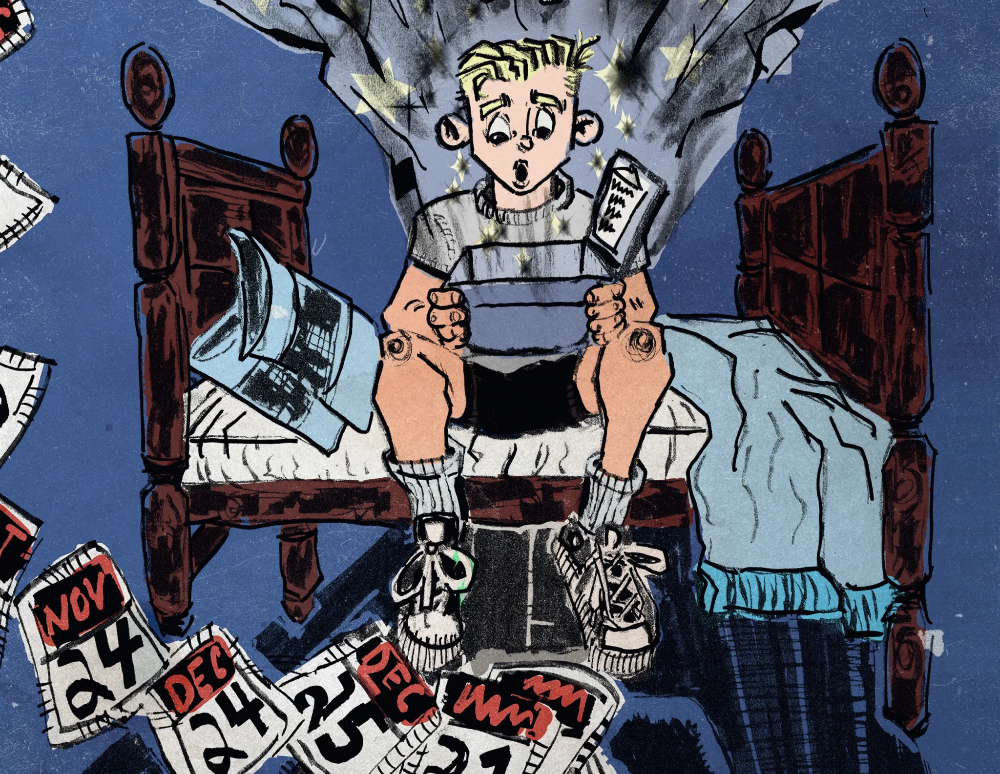

Short biography
Liv Fuller writes inspirational middle-grade fiction about quiet voices, kindness, and the courage to be yourself. She grew up in rural Wisconsin and earned journalism and law degrees from the University of Wisconsin–Madison. Metro Atlanta is her second home. After twenty-five years as an attorney and banker, her life now is filled with family, rescued pit bulls, and storytelling. The Blessing Box was based on the experiences of one of her children and celebrates people who follow their own rhythm.
Download biography and book information
The Blessing Box
A Christian, whimsical Christmas adventure for late-elementary and middle-grade readers. All Hugh wants for Christmas is a dog, but Santa’s unusual gift sends him on a yearlong journey of friendship, responsibility, and unexpected opportunities.
Author: Liv Fuller
Illustration: Quincy Battieste
Photos and artwork


Please retain the illustrator credit when sharing the book illustration. Contact Liv for publication permissions and additional materials.
Interviews and appearances
For interviews, readings, school visits, and library events, send an inquiry or email livfullerauthor@gmail.com.